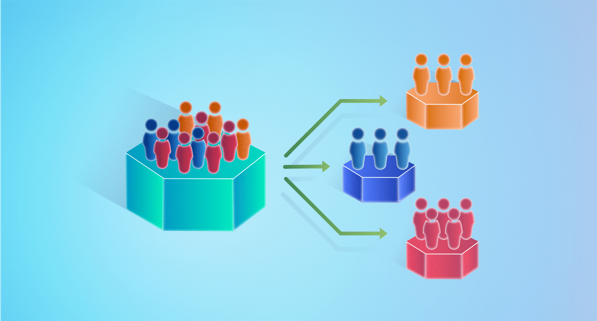

In this project I carried out a multiple linear regression to analyse
among Poles respondents the relationship between their Economics and
Culture attitudes towards immigration, attitude towards sexual
minorities, Age, whether they voted for a populist radical right
parties (PRRP) and their placement on the left/right scale.

Here, I made a segmentation of the customers from the database known as "Classicmodel". The segmentation was done using the percentile of customers by date of last order, frequency of orders, and quantity ordered during the period chosen for the study.

RFM analysis of the client. The project was carried out in a group. My participation can be seen in the documentation, or below the page in the details section.

Some individual board projects made in my debuts. KPI Customer Service and Budget Analysis
Chi-square test in R to explore whether PRRP and non-PRRP voters in Poland have significantly different attitudes towards immigrants.